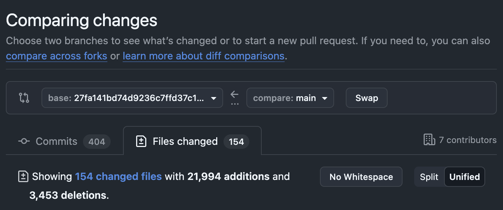
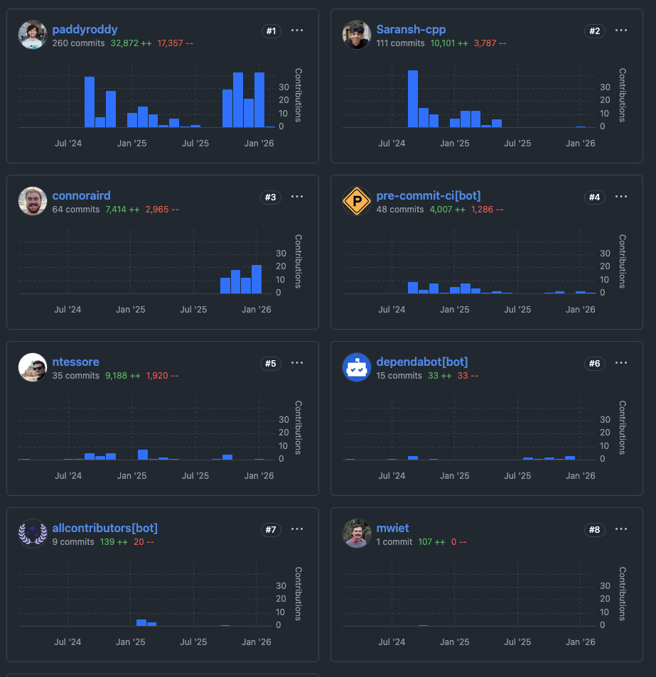
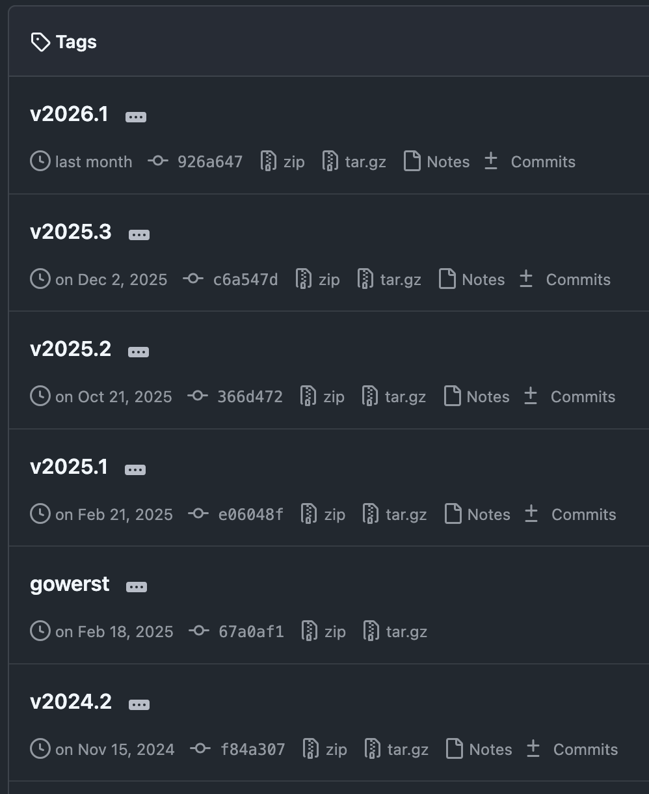
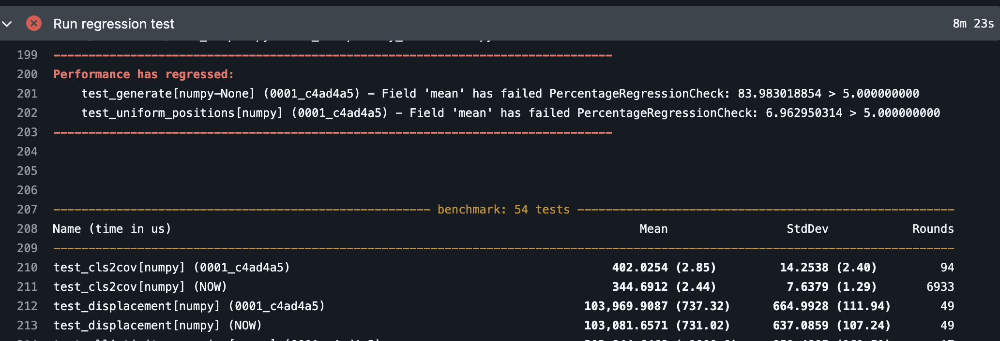

Porting GLASS to the Python Array API
ARCHER2 Celebration of Science 2026
Patrick J. Roddy
2026-03-19
GLASS: Generator for Large Scale Structure
Overview
GLASS is a code used in cosmology to generate simulations of the full observable universe. In its current form, the primary user base of the code are collaborations for large galaxy surveys, which are a cornerstone of modern cosmology.

The Team


Me (Co-Investigator + Technical Staff)
The Team
- Alessio Spurio Mancini (Co-Investigator)
- Arthur Loureiro (Co-Investigator)
- Benjamin Joachimi (Co-Investigator)
- Jason McEwen (Co-Investigator)
- Niall Jeffrey (Co-Investigator)
- Rebecca Martin (Research Administration)
The Aim
- Transform GLASS into a GPU-enabled code.
- Improve the performance of simulations with GPU acceleration.
- Implement and adapt parallel processing elements that utilise GPU capabilities.
- Optimise GLASS for modern GPU architectures.
- Enable differentiable simulations using JAX (in part or in full).
- Embed GLASS within N-body simulations running on GPU infrastructure for post-processing.
Python Array API Standard
What Are Arrays
- N-dimensional, grid-like data structure.
numpy.ndarrayis the most well known.- “Rectangular” shape data type.
- Fast, easy to manipulate.
- Ubiquitous.
The Array Ecosystem
Motivation: End Users
- Ability to switch array libraries without rewriting the whole code base.
- Avoid repeated transfers between array libraries or devices.
- Enable experimentation:
- Test new hardware.
- Use functionality specific to an array library.
Motivation: Array Providing Libraries
- Existing libraries:
- Interoperability with new consuming libraries.
- Collaborative API decisions with other array libraries
- New libraries:
- Concrete API to implement.
- Guaranteed compatibility with consuming libraries.
Motivation: Array Consuming Libraries
- Support hardware-accelerated and vendor-specific array types.
- But without additional maintenance burden.
- Library remains relevant when the community switches to a new array library.
Progress
Changelog



Testing on Different Array Backends
./noxfile.py run as uv run nox -s tests-3.14.
"""Nox config."""
import os
import pathlib
import shutil
import nox
import nox_uv
# Options to modify nox behaviour
nox.options.default_venv_backend = "uv"
nox.options.reuse_existing_virtualenvs = True
nox.options.sessions = [
"lint",
"tests",
]
ALL_PYTHON = [
"3.10",
"3.11",
"3.12",
"3.13",
"3.14",
]
ARRAY_BACKENDS = {
"array_api_strict": "array-api-strict>=2",
"jax": "jax>=0.4.32",
}
BENCH_TESTS_LOC = pathlib.Path("tests/benchmarks")
GLASS_REPO_URL = "https://github.com/glass-dev/glass"
SHARED_BENCHMARK_FLAGS = [
"--benchmark-calibration-precision=1000",
"--benchmark-columns=mean,stddev,rounds",
"--benchmark-max-time=5.0",
"--benchmark-sort=name",
"--benchmark-timer=time.process_time",
]
def _check_revision_count(
session_posargs: list[str],
*,
expected_count: int,
) -> None:
"""
Check that the correct number of revisions have been provided.
Parameters
----------
session_posargs
The positional arguments passed to the session.
expected_count
The expected number of revisions.
Raises
------
ValueError
If no revisions are provided.
ValueError
If the number of provided revisions does not match the expected count.
"""
if not session_posargs:
msg = f"{expected_count} revision(s) not provided"
raise ValueError(msg)
if len(session_posargs) != expected_count:
msg = (
f"Incorrect number of revisions provided ({len(session_posargs)}), "
f"expected {expected_count}"
)
raise ValueError(msg)
@nox_uv.session(
uv_no_install_project=True,
uv_only_groups=["lint"],
)
def lint(session: nox.Session) -> None:
"""Run the linter."""
session.run("pre-commit", "run", "--all-files", *session.posargs)
def _setup_array_backend(session: nox.Session) -> None:
"""Installs the requested array_backend."""
array_backend = os.environ.get("ARRAY_BACKEND")
if array_backend == "array_api_strict":
session.install(ARRAY_BACKENDS["array_api_strict"])
elif array_backend == "jax":
session.install(ARRAY_BACKENDS["jax"])
elif array_backend == "all":
session.install(*ARRAY_BACKENDS.values())
@nox_uv.session(
python=ALL_PYTHON,
uv_groups=["test"],
)
def tests(session: nox.Session) -> None:
"""Run the unit tests."""
_setup_array_backend(session)
session.run("pytest", *session.posargs)
@nox_uv.session(
python=ALL_PYTHON,
uv_groups=["test"],
)
def coverage(session: nox.Session) -> None:
"""Run tests and compute coverage for the core tests."""
_setup_array_backend(session)
session.run(
"pytest",
"--cov",
*session.posargs,
env=os.environ,
)
@nox_uv.session(
uv_groups=["test"],
)
def coverage_benchmarks(session: nox.Session) -> None:
"""Run tests and compute coverage for the benchmark tests."""
_setup_array_backend(session)
session.run(
"pytest",
BENCH_TESTS_LOC,
"--cov",
*SHARED_BENCHMARK_FLAGS,
*session.posargs,
env=os.environ,
)
@nox_uv.session(
python=ALL_PYTHON,
uv_groups=["doctest"],
uv_no_install_project=True,
)
def doctests(session: nox.Session) -> None:
"""Run the doctests."""
session.posargs.extend(
[
"--doctest-plus",
"--doctest-plus-generate-diff=overwrite",
"glass",
],
)
session.run("pytest", *session.posargs)
@nox_uv.session(uv_extras=["examples"])
def examples(session: nox.Session) -> None:
"""Run the example notebooks. Pass "html" to build html."""
if session.posargs:
if "html" in session.posargs:
session.log("Generating HTML for the example notebooks")
session.run(
"jupyter",
"nbconvert",
"--to",
"html",
"--embed-images",
"examples/**/*.ipynb",
)
else:
session.log("Unsupported argument to examples")
else:
session.run(
"jupyter",
"execute",
"--inplace",
*pathlib.Path().glob("examples/**/*.ipynb"),
*session.posargs,
)
@nox_uv.session(uv_groups=["docs"])
def docs(session: nox.Session) -> None:
"""Build the docs. Pass "serve" to serve."""
session.chdir("docs")
session.run(
"sphinx-build",
"-M",
"html",
".",
"_build",
"--fail-on-warning",
)
if session.posargs:
if "serve" in session.posargs:
port = 8001
session.log(
f"Launching docs at http://localhost:{port}/ - use Ctrl-C to quit",
)
session.run("python", "-m", "http.server", f"{port}", "-d", "_build/html")
else:
session.log("Unsupported argument to docs")
@nox_uv.session(
uv_no_install_project=True,
uv_only_groups=["build"],
)
def build(session: nox.Session) -> None:
"""Build an SDist and wheel."""
session.run("python", "-m", "build")
@nox_uv.session
def version(session: nox.Session) -> None:
"""
Check the current version of the package.
The intent of this check is to ensure that the package
is installed without any additional dependencies
through optional dependencies nor dependency groups.
"""
session.run("python", "-c", "import glass; print(glass.__version__)")
@nox_uv.session(
uv_no_install_project=True,
uv_only_groups=["test"],
)
def benchmarks(session: nox.Session) -> None:
"""
Run the benchmark test for a specific revision.
Note it is not possible to pass extra options to pytest.
"""
_check_revision_count(session.posargs, expected_count=1)
revision = session.posargs[0]
# overwrite current package with specified revision
session.install(f"git+{GLASS_REPO_URL}@{revision}")
session.run("pytest", BENCH_TESTS_LOC)
@nox_uv.session(
uv_no_install_project=True,
uv_only_groups=["test"],
)
def regression_tests(session: nox.Session) -> None:
"""
Run regression benchmark tests between two revisions.
Note it is not possible to pass extra options to pytest.
"""
_check_revision_count(session.posargs, expected_count=2)
before_revision, after_revision = session.posargs
_setup_array_backend(session)
# make sure benchmark directory is clean
benchmark_dir = pathlib.Path(".benchmarks")
if benchmark_dir.exists():
session.log(f"Deleting previous benchmark directory: {benchmark_dir}")
shutil.rmtree(benchmark_dir)
session.log(f"Generating prior benchmark from revision {before_revision}")
session.install(f"git+{GLASS_REPO_URL}@{before_revision}")
session.run(
"pytest",
BENCH_TESTS_LOC,
"--benchmark-autosave",
*SHARED_BENCHMARK_FLAGS,
)
session.log(f"Comparing {before_revision} benchmark to revision {after_revision}")
session.install(f"git+{GLASS_REPO_URL}@{after_revision}")
session.log("Running stable regression tests")
session.run(
"pytest",
BENCH_TESTS_LOC,
"-m",
"stable",
"--benchmark-compare=0001",
"--benchmark-compare-fail=mean:5%",
*SHARED_BENCHMARK_FLAGS,
)
session.log("Running unstable regression tests")
session.run(
"pytest",
BENCH_TESTS_LOC,
"-m",
"unstable",
"--benchmark-compare=0001",
# Absolute time comparison in seconds
"--benchmark-compare-fail=mean:0.0005",
*SHARED_BENCHMARK_FLAGS,
)Custom Typing
./glass/_types.py pending array-api-typing .
from typing import TYPE_CHECKING, Any
if TYPE_CHECKING:
from collections.abc import Sequence
from typing import ParamSpec, TypeAlias, TypeVar
import jaxtyping
import numpy as np
from array_api_strict._array_object import Array
from array_api_strict._dtypes import DType
import glass.jax
from glass import _rng
P = ParamSpec("P")
R = TypeVar("R")
T = TypeVar("T")
AnyArray: TypeAlias = np.typing.NDArray[Any] | jaxtyping.Array | Array # typos: ignore
ComplexArray: TypeAlias = np.typing.NDArray[np.complex128] | jaxtyping.Array | Array # typos: ignore
DTypeLike: TypeAlias = np.typing.DTypeLike | jaxtyping.DTypeLike | DType # typos: ignore
FloatArray: TypeAlias = np.typing.NDArray[np.float64] | jaxtyping.Array | Array # typos: ignore
IntArray: TypeAlias = np.typing.NDArray[np.int64] | jaxtyping.Array | Array # typos: ignore
UnifiedGenerator: TypeAlias = (
np.random.Generator | glass.jax.Generator | _rng.Generator
)
AngularPowerSpectra: TypeAlias = Sequence[AnyArray]
else:
# Runtime fallbacks (for Sphinx / autodoc)
# https://github.com/sphinx-doc/sphinx/issues/11991
AnyArray = Any
ComplexArray = Any
DTypeLike = Any
FloatArray = Any
IntArray = Any
UnifiedGenerator = Any
AngularPowerSpectra = AnyBenchmarking
Perform regression tests by using pytest-benchmark .

JAX does not allow array mutation, so need to be careful not to regress NumPy as a result of enabling JAX.
Additional Array API Utilities
glass/_array_api_utils.py for functions not in the specification nor in array-api-extra .
"""
Array API Utilities for glass.
==============================
This module provides utility functions and classes for working with multiple array
backends in the glass project, including NumPy, JAX, and array-api-strict. It includes
functions for importing backends, determining array namespaces, dispatching random
number generators, and providing missing functionality for array-api-strict through the
xp_additions class.
Classes and functions in this module help ensure consistent behavior and compatibility
across different array libraries, and provide wrappers for common operations such as
integration, interpolation, and linear algebra.
"""
from __future__ import annotations
import functools
from typing import TYPE_CHECKING, Any
import array_api_compat
if TYPE_CHECKING:
from collections.abc import Callable, Sequence
from types import ModuleType
import numpy as np
from glass._types import AnyArray, DTypeLike, IntArray
class CompatibleBackendNotFoundError(Exception):
"""
Exception raised when an array library backend that
implements a requested function, is not found.
"""
def __init__(self, missing_backend: str, users_backend: str | None) -> None:
self.message = (
f"{missing_backend} is required here as "
"no alternative has been provided by the user."
if users_backend is None
else f"GLASS depends on functions not supported by {users_backend}"
)
super().__init__(self.message)
def import_numpy(backend: str | None = None) -> ModuleType:
"""
Import the NumPy module, raising a helpful error if NumPy is not installed.
Parameters
----------
backend
The name of the backend requested by the user.
Returns
-------
The NumPy module.
Raises
------
ModuleNotFoundError
If NumPy is not found in the user's environment.
Notes
-----
This is useful for explaining to the user why NumPy is required when their chosen
backend does not implement a needed function.
"""
try:
import numpy # noqa: ICN001, PLC0415
except ModuleNotFoundError as err:
raise CompatibleBackendNotFoundError("numpy", backend) from err
else:
return numpy
def default_xp() -> ModuleType:
"""Returns the library backend we default to if none is specified by the user."""
return import_numpy()
class xp_additions: # noqa: N801
"""
Additional functions missing from both array-api-strict and array-api-extra.
This class provides wrappers for common array operations such as integration,
interpolation, and linear algebra, ensuring compatibility across NumPy, JAX,
and array-api-strict backends.
This is intended as a temporary solution. See
https://github.com/glass-dev/glass/issues/645 for details.
"""
@staticmethod
def trapezoid(
y: AnyArray,
x: AnyArray | None = None,
dx: float = 1.0,
axis: int = -1,
) -> AnyArray:
"""
Integrate along the given axis using the composite trapezoidal rule.
Parameters
----------
y
Input array to integrate.
x
Sample points corresponding to y.
dx
Spacing between sample points.
axis
Axis along which to integrate.
Returns
-------
Integrated result.
Raises
------
NotImplementedError
If the array backend is not supported.
Notes
-----
See https://github.com/glass-dev/glass/issues/646
"""
xp = array_api_compat.array_namespace(y, x, use_compat=False)
if xp.__name__ == "jax.numpy":
import glass.jax # noqa: PLC0415
return glass.jax.trapezoid(y, x=x, dx=dx, axis=axis)
if xp.__name__ == "numpy":
return xp.trapezoid(y, x=x, dx=dx, axis=axis)
if xp.__name__ == "array_api_strict":
np = import_numpy(xp.__name__)
# Using design principle of scipy (i.e. copy, use np, copy back)
y_np = np.asarray(y, copy=True)
x_np = np.asarray(x, copy=True)
result_np = np.trapezoid(y_np, x_np, dx=dx, axis=axis)
return xp.asarray(result_np, copy=True)
msg = "the array backend in not supported"
raise NotImplementedError(msg)
@staticmethod
def interp( # noqa: PLR0913
x: AnyArray,
x_points: AnyArray,
y_points: AnyArray,
left: float | None = None,
right: float | None = None,
period: float | None = None,
) -> AnyArray:
"""
One-dimensional linear interpolation for monotonically increasing sample points.
Parameters
----------
x
The x-coordinates at which to evaluate the interpolated values.
x_points
The x-coordinates of the data points.
y_points
The y-coordinates of the data points.
left
Value to return for x < x_points[0].
right
Value to return for x > x_points[-1].
period
Period for periodic interpolation.
Returns
-------
Interpolated values.
Raises
------
NotImplementedError
If the array backend is not supported.
Notes
-----
See https://github.com/glass-dev/glass/issues/650
"""
xp = array_api_compat.array_namespace(x, x_points, y_points, use_compat=False)
if xp.__name__ in {"numpy", "jax.numpy"}:
return xp.interp(
x,
x_points,
y_points,
left=left,
right=right,
period=period,
)
if xp.__name__ == "array_api_strict":
np = import_numpy(xp.__name__)
# Using design principle of scipy (i.e. copy, use np, copy back)
x_np = np.asarray(x, copy=True)
x_points_np = np.asarray(x_points, copy=True)
y_points_np = np.asarray(y_points, copy=True)
result_np = np.interp(
x_np,
x_points_np,
y_points_np,
left=left,
right=right,
period=period,
)
return xp.asarray(result_np, copy=True)
msg = "the array backend in not supported"
raise NotImplementedError(msg)
@staticmethod
def gradient(f: AnyArray) -> AnyArray:
"""
Return the gradient of an N-dimensional array.
Parameters
----------
f
Input array.
Returns
-------
Gradient of the input array.
Raises
------
NotImplementedError
If the array backend is not supported.
Notes
-----
See https://github.com/glass-dev/glass/issues/648
"""
xp = f.__array_namespace__()
if xp.__name__ in {"numpy", "jax.numpy"}:
return xp.gradient(f)
if xp.__name__ == "array_api_strict":
np = import_numpy(xp.__name__)
# Using design principle of scipy (i.e. copy, use np, copy back)
f_np = np.asarray(f, copy=True)
result_np = np.gradient(f_np)
return xp.asarray(result_np, copy=True)
msg = "the array backend in not supported"
raise NotImplementedError(msg)
@staticmethod
def linalg_lstsq(
a: AnyArray,
b: AnyArray,
rcond: float | None = None,
) -> tuple[AnyArray, AnyArray, int, AnyArray]:
"""
Solve a linear least squares problem.
Parameters
----------
a
Coefficient matrix.
b
Ordinate or "dependent variable" values.
rcond
Cut-off ratio for small singular values.
Returns
-------
x
Least-squares solution. If b is two-dimensional, the solutions are in the K
columns of x.
residuals
Sums of squared residuals: Squared Euclidean 2-norm for each column in b - a
@ x. If the rank of a is < N or M <= N, this is an empty array. If b is
1-dimensional, this is a (1,) shape array. Otherwise the shape is (K,).
rank
Rank of matrix a.
s
Singular values of a.
Raises
------
NotImplementedError
If the array backend is not supported.
Notes
-----
See https://github.com/glass-dev/glass/issues/649
"""
xp = array_api_compat.array_namespace(a, b, use_compat=False)
if xp.__name__ in {"numpy", "jax.numpy"}:
return xp.linalg.lstsq(a, b, rcond=rcond)
if xp.__name__ == "array_api_strict":
np = import_numpy(xp.__name__)
# Using design principle of scipy (i.e. copy, use np, copy back)
a_np = np.asarray(a, copy=True)
b_np = np.asarray(b, copy=True)
result_np = np.linalg.lstsq(a_np, b_np, rcond=rcond)
return tuple(xp.asarray(res, copy=True) for res in result_np)
msg = "the array backend in not supported"
raise NotImplementedError(msg)
@staticmethod
def einsum(subscripts: str, *operands: AnyArray) -> AnyArray:
"""
Evaluate the Einstein summation convention on the operands.
Parameters
----------
subscripts
Specifies the subscripts for summation.
*operands
Arrays to be summed.
Returns
-------
Result of the Einstein summation.
Raises
------
NotImplementedError
If the array backend is not supported.
Notes
-----
See https://github.com/glass-dev/glass/issues/657
"""
xp = array_api_compat.array_namespace(*operands, use_compat=False)
if xp.__name__ in {"numpy", "jax.numpy"}:
return xp.einsum(subscripts, *operands)
if xp.__name__ == "array_api_strict":
np = import_numpy(xp.__name__)
# Using design principle of scipy (i.e. copy, use np, copy back)
operands_np = (np.asarray(op, copy=True) for op in operands)
result_np = np.einsum(subscripts, *operands_np)
return xp.asarray(result_np, copy=True)
msg = "the array backend in not supported"
raise NotImplementedError(msg)
@staticmethod
def apply_along_axis(
func: Callable[..., Any],
func_inputs: tuple[Any, ...],
axis: int,
arr: AnyArray,
*args: object,
**kwargs: object,
) -> AnyArray:
"""
Apply a function to 1-D slices along the given axis.
Rather than accepting a partial function as usual, the function and
its inputs are passed in separately for better compatibility.
Parameters
----------
func
Function to apply to 1-D slices.
func_inputs
All inputs to the func besides arr.
axis
Axis along which to apply the function.
arr
Input array.
*args
Additional positional arguments to pass to func1d.
**kwargs
Additional keyword arguments to pass to func1d.
Returns
-------
Result of applying the function along the axis.
Raises
------
NotImplementedError
If the array backend is not supported.
Notes
-----
See https://github.com/glass-dev/glass/issues/651
"""
xp = array_api_compat.array_namespace(arr, *func_inputs, use_compat=False)
if xp.__name__ in {"numpy", "jax.numpy"}:
func1d = functools.partial(func, *func_inputs)
return xp.apply_along_axis(func1d, axis, arr, *args, **kwargs)
if xp.__name__ == "array_api_strict":
# Import here to prevent users relying on numpy unless in this instance
np = import_numpy(xp.__name__)
# Everything must be NumPy to avoid mismatches between array types
inputs_np = (np.asarray(inp) for inp in func_inputs)
func1d = functools.partial(func, *inputs_np)
return xp.asarray(
np.apply_along_axis(func1d, axis, arr, *args, **kwargs),
copy=True,
)
msg = "the array backend in not supported"
raise NotImplementedError(msg)
@staticmethod
def vectorize(
pyfunc: Callable[..., Any],
otypes: str | Sequence[DTypeLike],
*,
xp: ModuleType,
) -> Callable[..., Any]:
"""
Returns an object that acts like pyfunc, but takes arrays as input.
Parameters
----------
pyfunc
Python function to vectorize.
otypes
Output types.
xp
The array library backend to use for array operations.
Returns
-------
Vectorized function.
Raises
------
NotImplementedError
If the array backend is not supported.
Notes
-----
See https://github.com/glass-dev/glass/issues/671
"""
if xp.__name__ == "numpy":
return xp.vectorize(pyfunc, otypes=otypes)
if xp.__name__ in {"array_api_strict", "jax.numpy"}:
# Import here to prevent users relying on numpy unless in this instance
np = import_numpy(xp.__name__)
return np.vectorize(pyfunc, otypes=otypes)
msg = "the array backend in not supported"
raise NotImplementedError(msg)
@staticmethod
def radians(deg_arr: AnyArray) -> AnyArray:
"""
Convert angles from degrees to radians.
Parameters
----------
deg_arr
Array of angles in degrees.
Returns
-------
Array of angles in radians.
Raises
------
NotImplementedError
If the array backend is not supported.
"""
xp = deg_arr.__array_namespace__()
if xp.__name__ in {"numpy", "jax.numpy"}:
return xp.radians(deg_arr)
if xp.__name__ == "array_api_strict":
np = import_numpy(xp.__name__)
return xp.asarray(np.radians(deg_arr))
msg = "the array backend in not supported"
raise NotImplementedError(msg)
@staticmethod
def degrees(rad_arr: AnyArray) -> AnyArray:
"""
Convert angles from radians to degrees.
Parameters
----------
rad_arr
Array of angles in radians.
Returns
-------
Array of angles in degrees.
Raises
------
NotImplementedError
If the array backend is not supported.
"""
xp = rad_arr.__array_namespace__()
if xp.__name__ in {"numpy", "jax.numpy"}:
return xp.degrees(rad_arr)
if xp.__name__ == "array_api_strict":
np = import_numpy(xp.__name__)
return xp.asarray(np.degrees(rad_arr))
msg = "the array backend in not supported"
raise NotImplementedError(msg)
@staticmethod
def ndindex(shape: tuple[int, ...], *, xp: ModuleType) -> np.ndindex:
"""
Wrapper for numpy.ndindex.
See relevant docs for details:
- NumPy, https://numpy.org/doc/2.2/reference/generated/numpy.ndindex.html
Parameters
----------
shape
Shape of the array to index.
xp
The array library backend to use for array operations.
Raises
------
NotImplementedError
If the array backend is not supported.
"""
if xp.__name__ == "numpy":
return xp.ndindex(shape)
if xp.__name__ in {"array_api_strict", "jax.numpy"}:
np = import_numpy(xp.__name__)
return np.ndindex(shape)
msg = "the array backend in not supported"
raise NotImplementedError(msg)
@staticmethod
def tril_indices(
n: int,
*,
k: int = 0,
m: int | None = None,
xp: ModuleType,
) -> tuple[IntArray, ...]:
"""
Return the indices for the lower-triangle of an (n, m) array.
Parameters
----------
n
The row dimension of the arrays for which the returned indices will be
valid.
k
Diagonal offset.
m
The column dimension of the arrays for which the returned arrays will be
valid. By default m is taken equal to n.
Returns
-------
The row and column indices, respectively. The row indices are sorted in
non-decreasing order, and the corresponding column indices are strictly
increasing for each row.
"""
if xp.__name__ in {"numpy", "jax.numpy"}:
return xp.tril_indices(n, k=k, m=m)
if xp.__name__ == "array_api_strict":
np = import_numpy(xp.__name__)
return tuple(xp.asarray(arr) for arr in np.tril_indices(n, k=k, m=m))
msg = "the array backend in not supported"
raise NotImplementedError(msg)Random Number Generator
"""
Random Number Generation Utilities for glass.
=============================================
This module includes functions for dispatching random number generators using consistent
seeds. The chhoice of rng generator is determined based on the array library chosen by
the user.
"""
from __future__ import annotations
from typing import TYPE_CHECKING
if TYPE_CHECKING:
from types import ModuleType
from glass._types import DTypeLike, FloatArray, IntArray, UnifiedGenerator
SEED = 42
def rng_dispatcher(*, xp: ModuleType) -> UnifiedGenerator:
"""
Dispatch a random number generator based on the provided array's backend.
Parameters
----------
xp
The array library backend to use for array operations.
Returns
-------
The appropriate random number generator for the array's backend.
Raises
------
NotImplementedError
If the array backend is not supported.
"""
if xp.__name__ == "jax.numpy":
import glass.jax # noqa: PLC0415
return glass.jax.Generator(seed=SEED)
if xp.__name__ == "numpy":
return xp.random.default_rng(seed=SEED)
if xp.__name__ == "array_api_strict":
return Generator(seed=SEED)
msg = "the array backend in not supported"
raise NotImplementedError(msg)
class Generator:
"""
NumPy random number generator returning array_api_strict Array.
This class wraps NumPy's random number generator and returns arrays compatible
with array_api_strict.
"""
__slots__ = ("ap", "np", "rng")
def __init__(
self,
seed: int | bool | IntArray = SEED, # noqa: FBT001
) -> None:
"""
Initialize the Generator.
Parameters
----------
seed
Seed for the random number generator.
"""
import numpy # noqa: ICN001, PLC0415
import array_api_strict # noqa: PLC0415
self.ap = array_api_strict
self.np = numpy
self.rng = self.np.random.default_rng(seed=seed)
def random(
self,
size: int | tuple[int, ...] | None = None,
dtype: DTypeLike | None = None,
out: FloatArray | None = None,
) -> FloatArray:
"""
Return random floats in the half-open interval [0.0, 1.0).
Parameters
----------
size
Output shape.
dtype
Desired data type.
out
Optional output array.
Returns
-------
Array of random floats.
"""
dtype = dtype if dtype is not None else self.np.float64
return self.ap.asarray(self.rng.random(size, dtype, out)) # ty: ignore[no-matching-overload]
def normal(
self,
loc: float | FloatArray = 0.0,
scale: float | FloatArray = 1.0,
size: int | tuple[int, ...] | None = None,
) -> FloatArray:
"""
Draw samples from a Normal distribution (mean=loc, stdev=scale).
Parameters
----------
loc
Mean of the distribution.
scale
Standard deviation of the distribution.
size
Output shape.
Returns
-------
Array of samples from the normal distribution.
"""
return self.ap.asarray(self.rng.normal(loc, scale, size))
def poisson(
self,
lam: float | FloatArray,
size: int | tuple[int, ...] | None = None,
) -> FloatArray:
"""
Draw samples from a Poisson distribution.
Parameters
----------
lam
Expected number of events.
size
Output shape.
Returns
-------
Array of samples from the Poisson distribution.
"""
return self.ap.asarray(self.rng.poisson(lam, size))
def standard_normal(
self,
size: int | tuple[int, ...] | None = None,
dtype: DTypeLike | None = None,
out: FloatArray | None = None,
) -> FloatArray:
"""
Draw samples from a standard Normal distribution (mean=0, stdev=1).
Parameters
----------
size
Output shape.
dtype
Desired data type.
out
Optional output array.
Returns
-------
Array of samples from the standard normal distribution.
"""
dtype = dtype if dtype is not None else self.np.float64
return self.ap.asarray(self.rng.standard_normal(size, dtype, out)) # ty: ignore[no-matching-overload]
def uniform(
self,
low: float | FloatArray = 0.0,
high: float | FloatArray = 1.0,
size: int | tuple[int, ...] | None = None,
) -> FloatArray:
"""
Draw samples from a Uniform distribution.
Parameters
----------
low
Lower bound of the distribution.
high
Upper bound of the distribution.
size
Output shape.
Returns
-------
Array of samples from the uniform distribution.
"""
return self.ap.asarray(self.rng.uniform(low, high, size))JAX Support
"""Wrapper for JAX RNG with a NumPy-like interface."""
from __future__ import annotations
import math
import threading
from typing import TYPE_CHECKING
import jax.dtypes
import jax.numpy as jnp
import jax.random
import jax.scipy
import jax.typing
if TYPE_CHECKING:
from jaxtyping import PRNGKeyArray
from typing_extensions import Self
from glass._types import AnyArray, DTypeLike, FloatArray
def _size(
size: int | tuple[int, ...] | None,
*bcast: AnyArray,
) -> tuple[int, ...]:
"""
Return a size, which can be a single int or None, as a shape, which
is a tuple of int.
"""
if size is None:
return jnp.broadcast_shapes(*map(jnp.shape, bcast)) if bcast else ()
return (size,) if isinstance(size, int) else size
def trapezoid(
y: AnyArray,
x: AnyArray | None = None,
dx: float | AnyArray = 1.0,
axis: int = -1,
) -> FloatArray:
"""Wrapper for jax.scipy.integrate.trapezoid."""
return jax.scipy.integrate.trapezoid(y, x=x, dx=dx, axis=axis)
class Generator:
"""JAX random number generation as a NumPy generator."""
__slots__ = ("key", "lock")
key: PRNGKeyArray
lock: threading.Lock
@classmethod
def from_key(cls, key: PRNGKeyArray) -> Self:
"""Wrap a JAX random key."""
if not isinstance(key, jax.typing.ArrayLike) or not jax.dtypes.issubdtype(
key.dtype,
jax.dtypes.prng_key,
):
msg = "not a random key"
raise ValueError(msg)
rng = object.__new__(cls)
rng.key = key
rng.lock = threading.Lock()
return rng
def __init__(self, seed: int | AnyArray, *, impl: str | None = None) -> None:
"""Create a wrapper instance with a new key."""
self.key = jax.random.key(seed, impl=impl)
self.lock = threading.Lock()
@property
def __key(self) -> AnyArray:
"""Return next key for sampling while updating internal state."""
with self.lock:
self.key, key = jax.random.split(self.key)
return key
def split(self, size: int | tuple[int, ...] | None = None) -> AnyArray:
"""Split random key."""
shape = _size(size)
with self.lock:
keys = jax.random.split(self.key, 1 + math.prod(shape))
self.key = keys[0]
return keys[1:].reshape(shape)
def spawn(self, n_children: int) -> list[Self]:
"""Create new independent child generators."""
with self.lock:
self.key, *keys = jax.random.split(self.key, num=n_children + 1)
return list(map(self.from_key, keys))
def random(
self,
size: int | tuple[int, ...] | None = None,
dtype: DTypeLike = float,
) -> FloatArray:
"""Return random floats in the half-open interval [0.0, 1.0)."""
return jax.random.uniform(self.__key, _size(size), dtype)
def normal(
self,
loc: float | FloatArray = 0.0,
scale: float | FloatArray = 1.0,
size: int | tuple[int, ...] | None = None,
dtype: DTypeLike = float,
) -> FloatArray:
"""Draw samples from a Normal distribution (mean=loc, stdev=scale)."""
return loc + scale * jax.random.normal(self.__key, _size(size), dtype)
def poisson(
self,
lam: float | FloatArray,
size: int | tuple[int, ...] | None = None,
dtype: DTypeLike = int,
) -> FloatArray:
"""Draw samples from a Poisson distribution."""
return jax.random.poisson(self.__key, lam, size, dtype)
def standard_normal(
self,
size: int | tuple[int, ...] | None = None,
dtype: DTypeLike = float,
) -> FloatArray:
"""Draw samples from a standard Normal distribution (mean=0, stdev=1)."""
return jax.random.normal(self.__key, _size(size), dtype)
def uniform(
self,
low: float | FloatArray = 0.0,
high: float | FloatArray = 1.0,
size: int | tuple[int, ...] | None = None,
dtype: DTypeLike = float,
) -> FloatArray:
"""Draw samples from a Uniform distribution."""
return jax.random.uniform(self.__key, _size(size), dtype, low, high)Further Work
- Test on CuPy following v14 release.
- Create scripts to benchmark on ARCHER2 using different array backends.
- Contribute remaining required functions to array-api-extra .
- Implement spherical harmonic transforms that are array API compatible.
- Tech debt…

Porting GLASS to the Python Array API